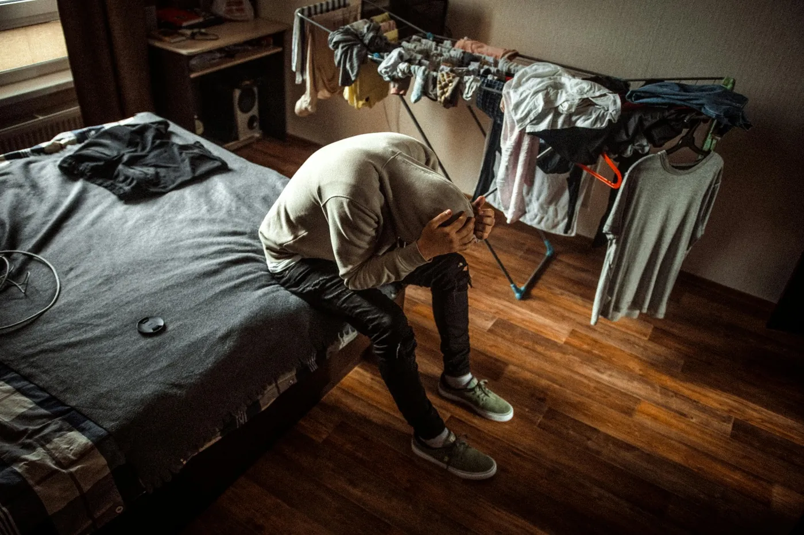

Artikel
Kenapa Banyak Orang Rugi Kontrak Properti ?

Kontrak properti sering dianggap hanya sebagai proses administratif biasa sebelum seseorang menempati rumah, toko, ruko, atau bangunan tertentu. Banyak orang merasa transaksi sudah aman ketika pembayaran dilakukan dan kunci properti telah diterima. Padahal dalam praktiknya, cukup banyak penyewa maupun pemilik properti yang justru mengalami kerugian setelah hubungan kontrak berjalan.
Kerugian dalam kontrak properti tidak selalu muncul karena penipuan besar atau tindak pidana. Sebagian besar justru berawal dari kesalahan yang terlihat sederhana, seperti tidak membaca isi perjanjian secara teliti, terlalu percaya pada kesepakatan lisan, tidak memahami aspek hukum kontrak, hingga tidak melakukan pengecekan legalitas properti sebelum transaksi dilakukan.
Masalah seperti ini sangat sering terjadi dalam praktik sewa menyewa properti di Indonesia, terutama pada rumah tinggal, ruko, toko, gudang, hingga bangunan komersial lainnya. Tidak sedikit penyewa yang akhirnya kehilangan uang deposit, dipaksa keluar sebelum masa sewa selesai, atau mengalami kerugian karena bangunan ternyata bermasalah secara hukum.
Di sisi lain, pemilik properti juga sering mengalami kerugian akibat penyewa menunggak pembayaran, merusak bangunan, menggunakan properti di luar kesepakatan, atau meninggalkan kewajiban finansial tertentu setelah masa sewa berakhir.
Karena itu, memahami aspek hukum dan teknis dalam kontrak properti menjadi hal yang sangat penting sebelum melakukan transaksi.
Kontrak Properti Merupakan Hubungan Hukum
Dalam hukum perdata Indonesia, hubungan sewa menyewa pada dasarnya merupakan suatu bentuk perjanjian antara pihak yang menyewakan dengan pihak penyewa. Ketentuan mengenai sewa menyewa diatur dalam Kitab Undang-Undang Hukum Perdata (KUHPerdata), khususnya dalam Buku III tentang Perikatan.
Menurut Pasal 1548 KUHPerdata, sewa menyewa adalah suatu perjanjian di mana pihak yang satu mengikatkan dirinya untuk memberikan kepada pihak lainnya kenikmatan dari suatu barang selama waktu tertentu dengan pembayaran suatu harga yang disanggupi pihak penyewa.
Dari ketentuan tersebut dapat dipahami bahwa hubungan sewa menyewa bukan hanya hubungan biasa, melainkan hubungan hukum yang menimbulkan hak dan kewajiban bagi kedua belah pihak.
Artinya, sejak kontrak ditandatangani, baik pemilik maupun penyewa memiliki tanggung jawab hukum yang wajib dipenuhi. Karena itu, setiap isi perjanjian dalam kontrak properti dapat memiliki konsekuensi hukum apabila dilanggar.
Sayangnya, masih banyak masyarakat yang menganggap kontrak properti hanya formalitas biasa sehingga tidak benar-benar memahami isi dan akibat hukumnya.
Banyak Orang Tidak Membaca Isi Kontrak Secara Menyeluruh
Salah satu penyebab paling umum kenapa banyak orang rugi saat kontrak properti adalah karena tidak membaca isi perjanjian secara menyeluruh. Dalam praktiknya, banyak penyewa hanya fokus pada harga sewa, lokasi, dan durasi kontrak tanpa memperhatikan klausul lain yang sebenarnya sangat penting.
Padahal kontrak properti biasanya memuat berbagai ketentuan teknis yang dapat memengaruhi posisi hukum para pihak di kemudian hari. Misalnya mengenai kenaikan harga sewa, larangan renovasi, pengembalian deposit, pemutusan kontrak sepihak, biaya perawatan bangunan, hingga kewajiban pembayaran pajak dan utilitas.
Tidak sedikit penyewa yang baru menyadari adanya klausul merugikan ketika konflik mulai muncul. Dalam kondisi seperti ini, posisi penyewa biasanya menjadi lemah karena secara hukum mereka telah menyetujui isi perjanjian yang ditandatangani.
Hal ini berkaitan dengan asas pacta sunt servanda sebagaimana tercermin dalam Pasal 1338 KUHPerdata yang menyatakan bahwa semua perjanjian yang dibuat secara sah berlaku sebagai undang-undang bagi mereka yang membuatnya.
Asas tersebut menunjukkan bahwa setiap kontrak yang telah disepakati wajib dihormati dan dilaksanakan oleh para pihak. Karena itu, alasan tidak membaca kontrak biasanya tidak dapat dijadikan dasar untuk menghindari kewajiban hukum.
Kesepakatan Lisan Sering Menimbulkan Masalah
Dalam praktik properti di Indonesia, masih banyak transaksi sewa menyewa dilakukan hanya berdasarkan komunikasi lisan dan rasa percaya. Bahkan pada beberapa transaksi bernilai besar, para pihak hanya mengandalkan percakapan WhatsApp atau kesepakatan informal tanpa membuat kontrak tertulis yang jelas.
Secara hukum, perjanjian lisan memang tetap dapat dianggap sah selama memenuhi syarat sah perjanjian sebagaimana diatur dalam Pasal 1320 KUHPerdata. Syarat tersebut meliputi adanya kesepakatan, kecakapan para pihak, objek tertentu, dan sebab yang halal.
Namun masalah terbesar dari perjanjian lisan bukan terletak pada sah atau tidaknya, melainkan pada pembuktian apabila terjadi sengketa.
Tanpa adanya dokumen tertulis, akan sulit membuktikan berbagai hal penting seperti: jangka waktu sewa, nilai pembayaran, hak penggunaan bangunan, tanggung jawab kerusakan, hingga mekanisme pengakhiran kontrak.
Akibatnya, masing-masing pihak sering memiliki versi cerita yang berbeda dan sama-sama merasa benar.
Dalam sengketa perdata, alat bukti menjadi faktor yang sangat menentukan. Karena itu, kontrak tertulis memiliki peran penting sebagai alat bukti utama untuk menunjukkan hak dan kewajiban para pihak.
Tidak Memeriksa Legalitas Properti
Kesalahan lain yang sering menyebabkan kerugian dalam kontrak properti adalah tidak melakukan pengecekan legalitas bangunan sejak awal.
Masih banyak penyewa yang langsung menyewa rumah, toko, atau ruko tanpa memastikan apakah properti tersebut benar-benar dimiliki oleh pihak yang menyewakan. Dalam beberapa kasus, properti ternyata masih dalam sengketa keluarga, diagunkan ke bank, atau bahkan disewakan oleh pihak yang tidak memiliki hak penuh atas bangunan tersebut.
Kondisi seperti ini sangat berisiko, terutama untuk properti usaha. Bayangkan apabila seseorang telah mengeluarkan biaya renovasi dan operasional usaha dalam jumlah besar, tetapi ternyata bangunan mengalami sengketa hukum yang membuat penyewa harus mengosongkan lokasi.
Karena itu, sebelum menandatangani kontrak properti, penting untuk memastikan legalitas bangunan terlebih dahulu. Pemeriksaan dapat dilakukan terhadap sertifikat tanah, status kepemilikan, pembayaran Pajak Bumi dan Bangunan (PBB), hingga izin bangunan apabila properti digunakan untuk kebutuhan komersial.
Langkah ini penting untuk mengurangi risiko hukum di kemudian hari.
Masalah Deposit yang Sering Menjadi Sumber Konflik
Persoalan uang deposit juga menjadi salah satu sumber kerugian yang paling sering terjadi dalam kontrak properti.
Dalam praktiknya, deposit biasanya diberikan sebagai bentuk jaminan apabila terjadi kerusakan bangunan atau tunggakan pembayaran selama masa sewa berlangsung. Namun masalah muncul ketika sejak awal tidak ada penjelasan yang rinci mengenai mekanisme pengembalian deposit tersebut.
Tidak sedikit penyewa yang menganggap deposit pasti akan dikembalikan penuh setelah masa kontrak selesai. Sebaliknya, pemilik sering merasa memiliki hak memotong deposit untuk biaya perbaikan tertentu.
Karena tidak ada ketentuan tertulis yang jelas, masing-masing pihak akhirnya memiliki penafsiran berbeda mengenai haknya.
Untuk menghindari konflik seperti ini, kondisi bangunan sebaiknya didokumentasikan sejak awal melalui foto atau berita acara serah terima. Selain itu, kontrak juga perlu menjelaskan secara rinci kondisi apa saja yang dapat menyebabkan pemotongan deposit.
Pemutusan Kontrak Secara Sepihak
Dalam praktik sewa menyewa properti, pemutusan kontrak secara sepihak juga menjadi masalah yang cukup sering terjadi.
Beberapa pemilik properti meminta penyewa mengosongkan bangunan sebelum masa sewa selesai karena alasan tertentu, misalnya properti akan dijual atau disewakan kepada pihak lain dengan harga lebih tinggi.
Sebaliknya, tidak sedikit penyewa yang tiba-tiba meninggalkan properti sebelum kontrak berakhir tanpa menyelesaikan kewajibannya.
Padahal secara hukum, tindakan tersebut dapat dikategorikan sebagai wanprestasi apabila bertentangan dengan isi perjanjian.
Wanprestasi merupakan kondisi ketika salah satu pihak tidak melaksanakan kewajiban sebagaimana diperjanjikan. Dalam hukum perdata, pihak yang dirugikan pada dasarnya dapat mengajukan tuntutan berupa: pemenuhan perjanjian, ganti rugi, pembatalan kontrak, maupun biaya kerugian lainnya.
Karena itu, klausul mengenai pengakhiran kontrak sebaiknya dijelaskan secara rinci sejak awal agar tidak menimbulkan multitafsir di kemudian hari.
Pentingnya Asas Itikad Baik dalam Kontrak Properti
Selain asas pacta sunt servanda, hukum perjanjian Indonesia juga mengenal asas itikad baik.
Asas ini pada dasarnya mengharuskan para pihak menjalankan perjanjian secara jujur, wajar, dan tidak merugikan pihak lain. Prinsip tersebut juga tercermin dalam Pasal 1338 ayat (3) KUHPerdata yang menyatakan bahwa perjanjian harus dilaksanakan dengan itikad baik.
Dalam praktik properti, asas itikad baik sangat penting karena hubungan kontrak biasanya berlangsung dalam jangka waktu tertentu dan melibatkan penggunaan aset bernilai tinggi.
Misalnya, pemilik properti tidak boleh secara sengaja mencari alasan untuk menahan deposit penyewa tanpa dasar yang jelas. Sebaliknya, penyewa juga tidak boleh menggunakan bangunan di luar tujuan yang telah disepakati.
Ketika salah satu pihak bertindak tidak jujur atau menyalahgunakan keadaan, potensi konflik biasanya akan jauh lebih besar.
Pentingnya Dokumentasi dalam Transaksi Properti
Dalam transaksi properti, dokumentasi memiliki peran yang sangat penting sebagai alat perlindungan hukum.
Selain kontrak tertulis, para pihak juga sebaiknya menyimpan: bukti pembayaran, percakapan penting, foto kondisi bangunan, hingga dokumen serah terima properti.
Banyak sengketa properti sebenarnya dapat diminimalkan apabila seluruh proses transaksi terdokumentasi dengan baik.
Saat ini masih banyak orang menganggap dokumentasi sebagai hal yang tidak penting, padahal dalam sengketa perdata, alat bukti sering menjadi faktor utama dalam menentukan posisi hukum para pihak.
Kehati-Hatian Menjadi Kunci Utama
Dalam praktik properti modern, kehati-hatian merupakan faktor yang sangat penting sebelum menandatangani kontrak.
Terburu-buru melakukan deal karena takut kehilangan lokasi strategis sering membuat seseorang mengabaikan aspek hukum yang sebenarnya sangat penting. Padahal kerugian dalam kontrak properti biasanya muncul bukan karena kurangnya peluang, tetapi karena kurangnya kehati-hatian sejak awal transaksi.
Karena itu, sebelum menyewa rumah, toko, ruko, atau bangunan lainnya, penting untuk memahami isi kontrak secara menyeluruh, memeriksa legalitas properti, serta memastikan seluruh kesepakatan dituangkan secara tertulis.
Semakin jelas dan rinci isi perjanjian, maka semakin kecil pula potensi konflik dan kerugian yang dapat muncul di kemudian hari.
Dasar hukum : Kitab Undang-Undang Hukum Perdata (KUHPerdata), khususnya Pasal 1320 tentang syarat sah perjanjian, Pasal 1338 tentang asas kebebasan berkontrak dan kekuatan mengikat perjanjian, serta Pasal 1548 KUHPerdata tentang sewa menyewa.